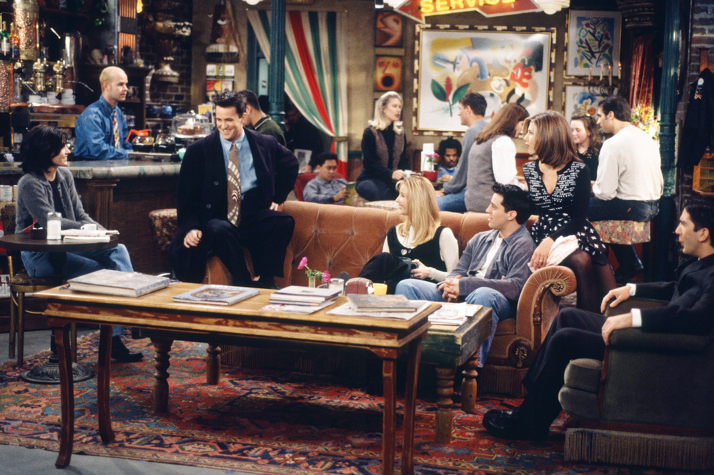

- Os episódios foram gravados na Califórnia, não em Nova York
- O famoso sofá foi encontrado no porão dos estúdios da Warner
- Lisa Kudrow (Phoebe) odiava tocar violão
- Cada episódio levava cerca de 6 horas para ser gravado
- Todos os episódios foram gravados em frente a uma plateia
- Os atores chegaram a receber US$1 milhão por episodio
- Lisa Kudrow (Phoebe) realmente estava grávida quando aceitou ser barriga de aluguel.
- Existia um funcionário apenas para desenhar no quadro atrás da porta de Joey e Chandler
- Lisa Kudrow (Phoebe) morria de medo do pato.
- Gunther só aparece em cena pois é a única pessoa que sabia manusear a máquina de café
- Jennifer Aniston (Rachel) quase não aceitou gravar a última temporada
- Phoebe originalmente se casaria com David.
- David Schwimmer era pra ter dito o nome certo no altar, foi apenas um erro de gravação
- Matthew Perry (Chandler) teve problemas com vício e não lembra de cenas gravadas entre a 3ª e 6ª temporada.
